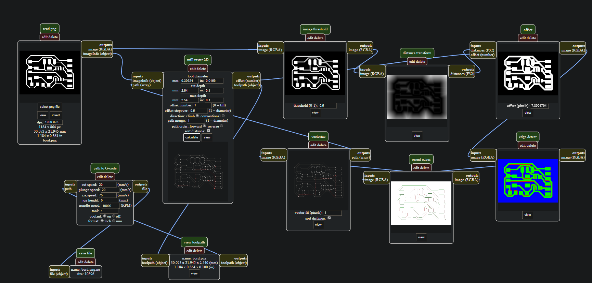
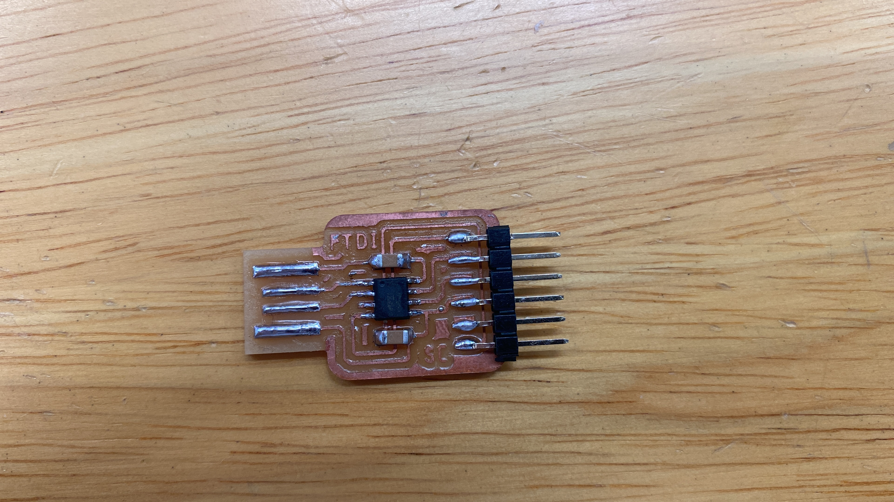
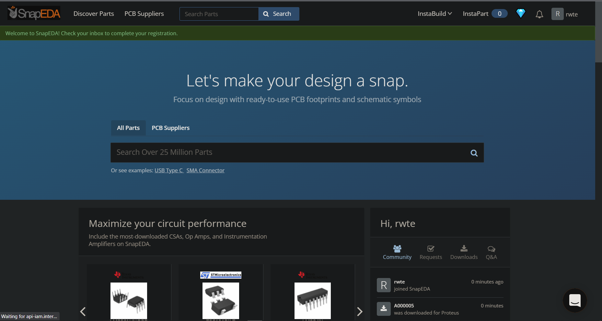
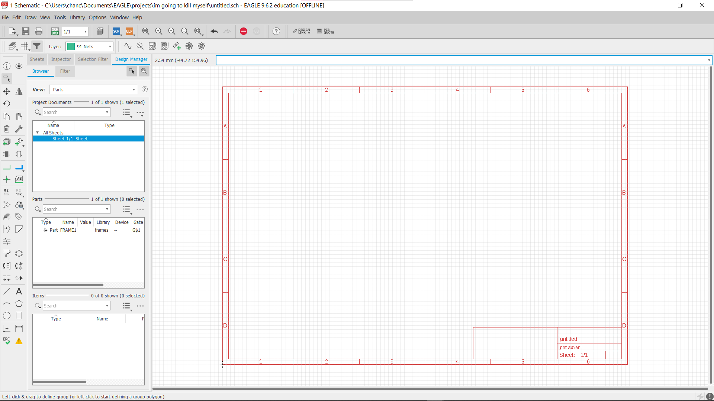
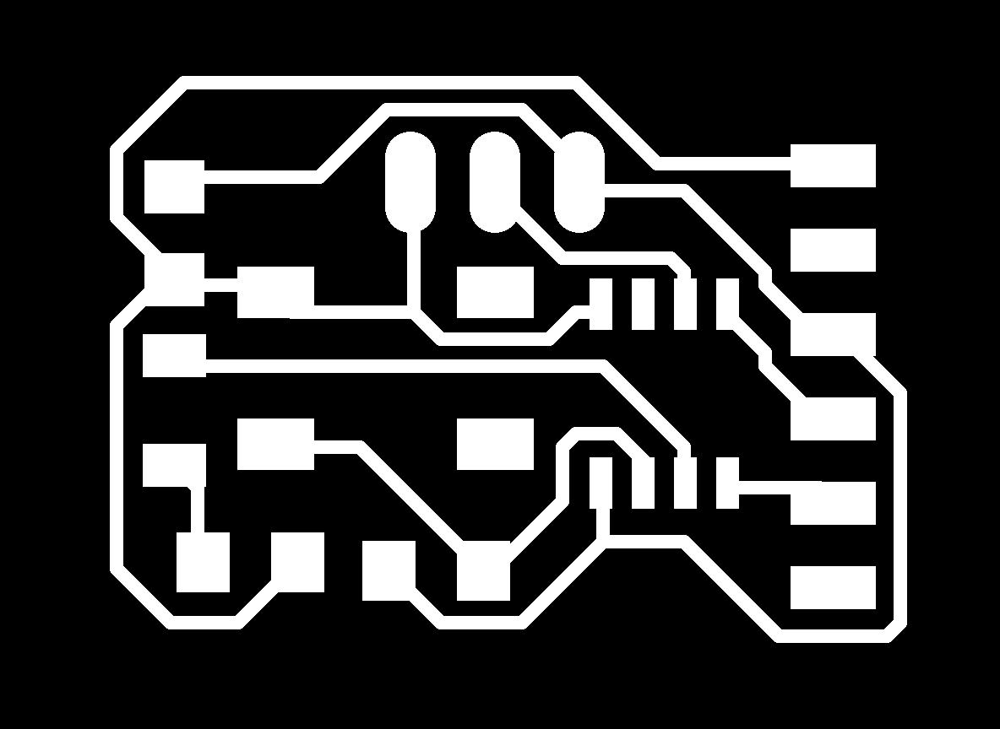
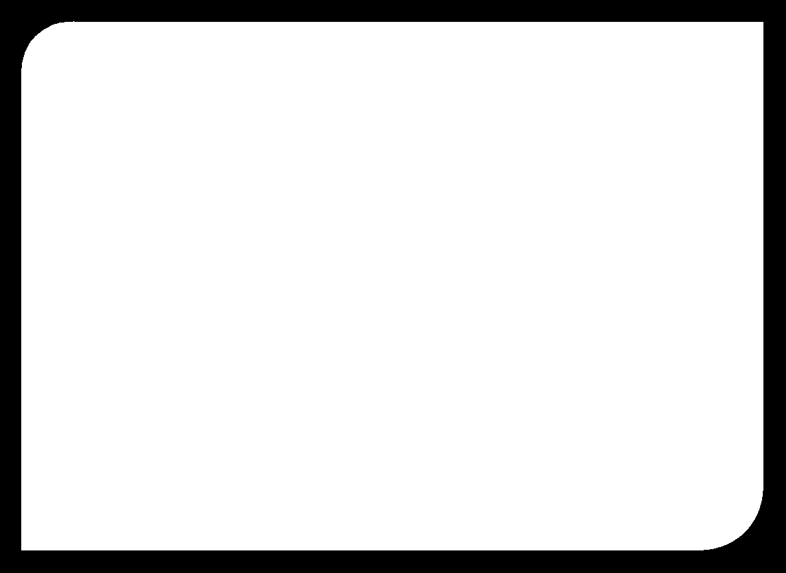
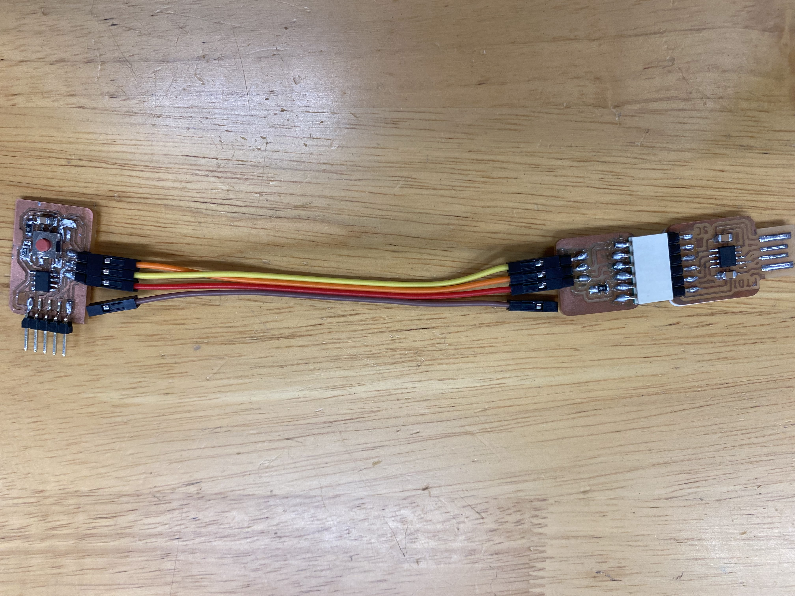

PCB Manufacturing
Making of FTDI to UPDI programmer
"Typically, debugging via the serial monitor and burning the bootloader requires 2 connectors: FTDI and UPDI (like the ICSP connector for the Atmega328 and others) These connectors, however, take up a lot of space on the pcb, especially with respect to the fact that the ATtiny devices, such as the ATtiny3217, are very small. That is why a combined FTDI / UPDI connector would help take less space on the pcb." -Sauce
Using a universal FTDI to UPDI boot loader, we can compact our microprocessor board and have only the essentials on the board.
For the first two board, we made a FTDI to UPDI programmer.
FTDI example

FTDI Wiring on EAGLE

UPDI example

Using the png files provided, we loaded it into mods to obtain a Gcode file.

Open mods and right click : menu/ programs/ open server program/ mill 2D png.
Then, "select PNG file on the left"
Afterwards, under 'Mill Raster 2D', click calculate, and the Gcode will be generated.
After that, we uploaded the gcode file into the computer on the CNC Router.


Then, we set the X and Y coordinate to 0 on our prefered start location, and set the Z to 0 using the "Zeroing Tappy Tappy" (a micro switch with a zeroing sensor).
During the routing process, the adjustment of the Z axis is favourable when it is undercutting or overcutting, so increasing or decresing the Z offset will yield better cuts.
In process of routing FTDI


In process of routing UPDI

Finish inner Board

Routing the outline of the UPDI board

Finished UPDI board, ready for components to be soldered on

After the base board is routed, components are soldered on.
For the FTDI board, two 1 microfarad capacitors and a ATtiny412 chip was soldered on.
And for the UPDI board, 1 4991 packaged resistor (4.99k) was soldered on.
Final product of the FTDI

Final UPDI + FTDI

Making of Hello Board
SnapEDA is a site where we can get the schematics of our component, namely the chip, and import it into Eagles for wiring.


This Fusion 360 Eagle, the software we used to design and wire the circuit and map out the schmetics.

This is the schmatics of the hello board made.
It has a LED (Light Emitting Diode) and a DPDT push button, controlled by an ATtiny 412 Microcontroller.
After that, I have used the auto route function to route the wiring and rearrange manually to achive 100% wiring.

Then, the Png file is generated and I put it in mods, to generate the Gcode use for routing.


Hello Board Schematics
Hello Board Board diragram
Hello Board NC
Hello Board Outline NC
{kind=link}
{kind=link}
Soldering
"If the solder is applied properly, it should like Mt Fuji type, rather than Ice Cream"

For the soldering, my 'Hello Board' had connectivity issues with the Arduino application.
I have counted wrongly the pins and cut the pins wrongly, so I had tried to use super glue to align the missing pin to the other pins and then solder on the extra pin to the unused connector. Eventually I had decided that it is not connected to anything so I have dropped it.

After troubleshooting done by Mr Stevens, the board was found to have its chip and LED shorted, thus rendering those component broken.
I have opted to do most of the soldering at home, which yield few issues.
Firstly, my soldering iron tip was hotswapable, and I have opted to use a fat pointed tip iron head, which could not properlly apply the solder between pins. This resulted in many messy residue which may have resulted in the shorting of the chip.

The solder may have travel across the lanes.
Next, the temperature on my soldering iron was too high, thus prolong contact with the chip causes the component to attempt to melt.
For future boards, I might attempt to use a soldering liquid (approx: 138 celcius) which melts at a lower temperature and a heat gun
Final Product
Final programmer with Hello Board

Placeholder Video for the working board with embeded programming
Video